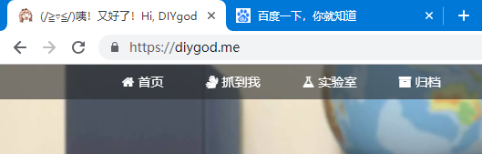

浏览器标签卖萌
一月 01, 2021
卖萌原理？
前段时间我看到大佬🍭DIYgod的博客浏览器标签卖萌的特效，被萌到了，于是学习了一番
当点击别的标签页，博客标签显示 “╭(°A° ) ╮ 页面崩溃啦 ~”
而再点击博客标签，激活又显示 “‘(ฅ>ω< ฅ) 噫又好了~”


这是怎么实现的呢？
1 | var OriginTitle = document.title; |
最后设定一个Timeout，2000毫秒后标题恢复正常了。
如何卖萌？
至于怎么使用呢，看不同情况而定。
一般情况下在要使用该特效的页面引入如下js
1 | <script type="text/javascript" src="/js/src/crash_cheat.js"></script> |
像Hexo驱动下的博客主题包，比如NexT主题，则在next\source\js\src文件夹下创建crash_cheat.js，添加js代码，然后在layout下的_layout.swig文件中，添加引用即可（注：在swig末尾添加）
查看评论